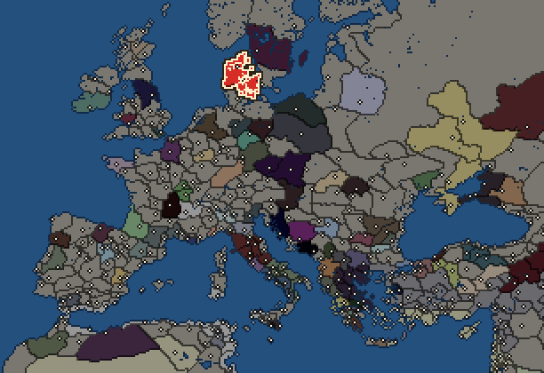
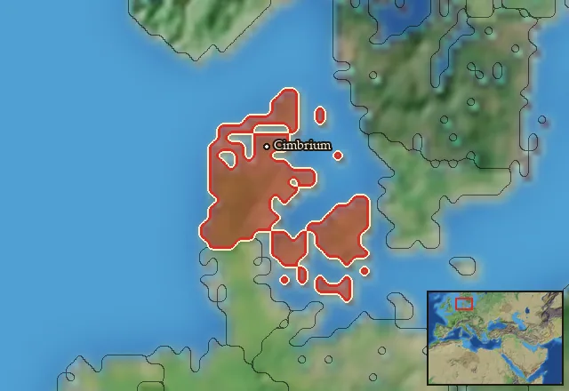

RTR: Imperium Surrectum
RTR: Imperium SurrectumCimbri


- difficulty Difficult
- Germanic culture
- believes
 Germanic
Germanic - 1 settlement
- capital Cimbrium
- 3,000 manpower
- 3 characters
- 16 faction units
- 434 regional units
The campaign brief
"The Alban Mount was seen to flame at night. A shrine and its statue were struck from the sky. The Altar of Safety was broken. The earth gaped widely in Lucania and the region of Privernum. In Gaul the sky seemed to burn. The Cimbri and Teutones crossed the Alps and inflicted a terrible slaughter on the Romans and allies." – Julius Obsequens, On Prodigies
You should flee! All of you! Pack your belongings, children, animals, and go! The ferocious Cimbri have started moving into our direction. No one really knows who they are. Some say they are Celts, like those who plundered Rome or Delphi and have now made a name for themselves as fearsome mercenaries in Asia Minor; others believe they are Cimmerians, since this is where their name must come from. And, oh, how it fits! Wild savages, pillaging and plundering everything in their path, as they have ravaged Asia a long time ago! But personally I believe those who say that they came from a peninsular far to the north, battered from three sides by the great Oceanus. And as you know, it is always those who live further up north and along the ocean-coast that are most warlike!
Their women, one fiercer than the next, serve their tribe as seers, sacrificing human prisoners, either mercifully cutting their throats, killing them quickly and filling huge cauldrons with their blood, or brutally ripping them open like hungry harpies, grabbing into the flesh of living people. Then, when they get a hold of the entrails, they read the fate of the tribe; and what a lucky fate it has been! Their plundering has not only made them rich, but pulled many greedy tribes along, searching for plunder, slaves, and fertile land to exploit. Above all, these women fight as well. Absolutely barbaric if you ask me. As soon as they think their men are not brave enough, they will take up weapons, screech a terrible cry, and slaughter everyone around them, be they friend or foe. Or so I have heard. And I have not even mentioned their warriors. Numerous are they, first and foremost. Like a hungry swarm of locusts, sweeping through the land until it is barren and nothing alive remains, leaving behind a trail of fire and death. Those on foot are naked and wild, fearlessly ramming into their enemy’s formation, like savages that know no order. The riders, on their ugly horses, will catch anyone who is not fast enough. You are lucky, if your death is quick...
Speaking of their riders: their helmets are like the gaping maws of beasts and the heads beneath it not much prettier to look at. They snarl and growl and bark, I am not even sure if they speak a human tongue! As if that is not dreadful enough, they are clad in sturdy iron and carry shields, as bright as the sun and as white as the snow of their homeland. Growing up in the most frosty and darkest places known to man, they withstand cold like no other. I have seen them, sliding down steep mountain ranges on their shields, naked and hairy like man-beasts that are as cold on the outside as on the inside.
So flee! Flee to the south and spread my message. Let everyone know what awaits them. And never come back to this place. Cower behind your walls, pray to the gods, and hope for the best. For the Cimbri are coming, and they know neither fear nor mercy!
Starting settlements
Cimbri begins with 1 settlement and 3,000 manpower.
What is already built in each settlement
Cimbrium, in Cimbria: Governor's House, Homeland, Region Information Scroll, Training Grounds
Starting diplomacy
Allied with (1):  Suebi
Suebi
Trade agreements with (1):  Suebi
Suebi
At peace with every other faction.
Like every faction, it is also at war with the  Free Peoples, who hold every settlement no faction does.
Free Peoples, who hold every settlement no faction does.
Homeland
Cimbri's homeland is 1 region. Only there can it install the Homeland government (more on homelands).

Starting characters
| Name | Role | Age | Name | Role | Age | Name | Role | Age | |||
|---|---|---|---|---|---|---|---|---|---|---|---|
| Inguo | General | 36 | Wallia | General | 18 | Horsa | General | 40 |
Reforms
Open to every faction: Military innovations have arrived!, Second wave of military innovations have arrived!.
Units you can recruit
The same as in the main campaign.